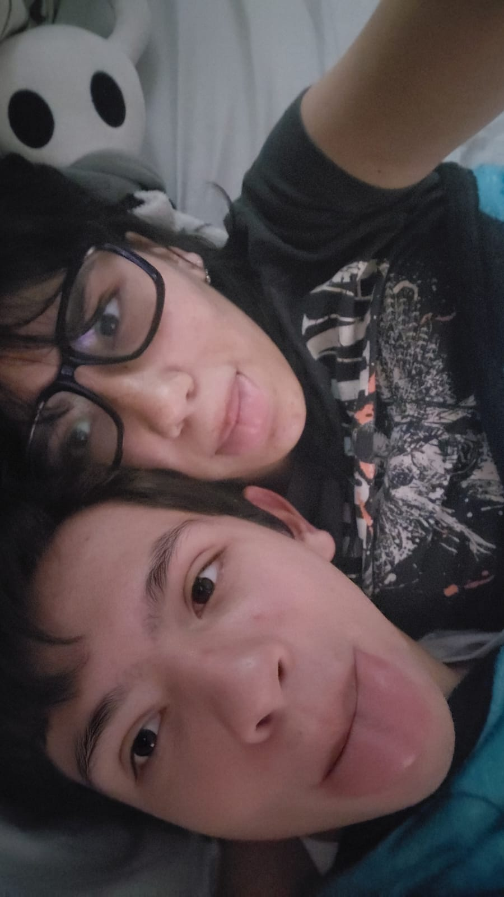
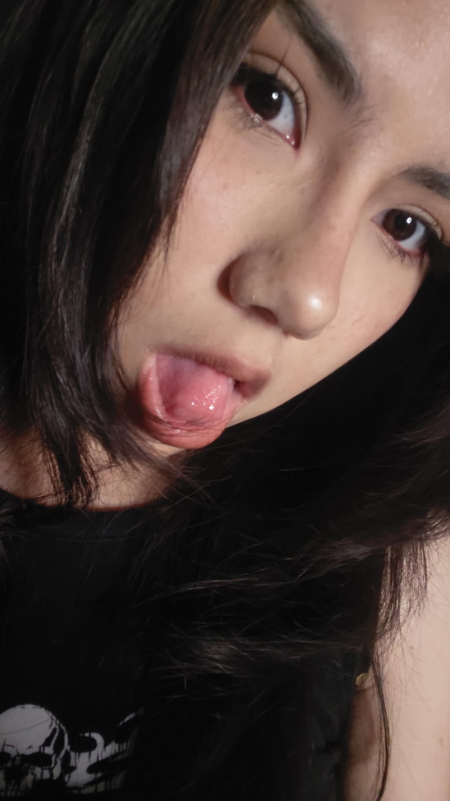
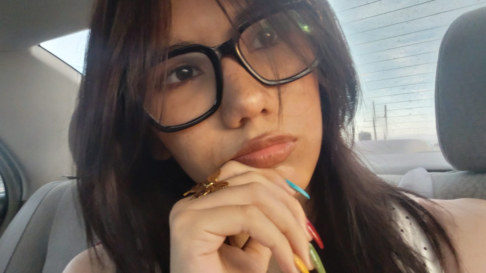

Gracias por hacer más felices cada uno de mis días, mi amor <3. Ya salimos de vacacioneeees, amadaaaa ¿No te sientes rara? Es que ya ha pasado tiempo desde que nos conocimos, nos conocimos en secundaria y ya hasta estamos pasando a segundo año de prepa, yia estamos viejos, pero lo weno es que estamos creciendo juntos, mi amor. Quiero felicitarte por seguir resistiendo, mi vida, han pasado taaantas cosas en tu vida que cada vez que pienso en ello me sorpende tu fuerza, en serio, amor, tú y yo sabemos que han pasado bastantes situaciones fuertes y que no estás del todo bien pero yo admiro cómo sigues dando lo mejor de tí y siendo una mejor persona cada día y weno, te hice este detallito solo para escribir lo que siento.

Holaaaa, amadaaaaaaaaa, shi está shila la página? Espero te guste así como te me gustaste desde el momento en que te vi y hasta la fecha no hay día en el que no esté feliz de verte, solo ver una foto tuya de tu hermosa carita es suficiente para alegrar mi día y amada, no sabes toda la felicidad que me causa estar contigo, es un momento increible siempre, siempre nos reímos, bromeamos y siento una chispa que no siento con nadie más y saber que estaremos así por mucho tiempo y que ya llevamos DOS AÑOTES siendo esposos (legalmente ño) es maravilloso, amada, pero lo más maravilloso aquí eres tú, tú eres un ser maravilloso.
Muchas gracias por cada momento que hemos pasado juntos, amada yyy espero que en estás vacaciones podamos crear más bonitos recuerdos, espero este no sea nuestro último verano juntos tampoco, pues en serio no puedo ver un futuro sin tí a mi lado, eres tan importante para mí y te amo tanto que me es imposible pensar en mi plan a futuro sin pensar en cómo estaríamos juntos

Gracias por ser la cosita hermosa que alegra mis días, cielo, que nadie te diga lo contrario, tú estás bien pechocha y bien guapota y así bien ñamñamñam, amada, no dejes que ni siquiera tu cabeza te diga lo contrario, yo te amo con toda mi alma y te deseo con todo mi cuerpo, pero nunca olvides que te amo de aquí a la luna a pasitos de tortuga, mi vida. ❤️

Una última fotito pope me gustas y dime ¿Escuchas la melodía? ¿Es reljante, verdad? la escogí porque es una de las melodías a las que uso como referencia para expresar de alguna manera cómo se siente tu presencia y siendote honestp, la musica es la mejor forma de expresarlo pues para crear musica se necesitan de instrumentos, melodías y ritmo que trabajen juntos para crear una maravilla y justo así eres tú, amada. Cada rasgo tuyo es complementa para crear a alguien tan perfecto como tú pues hasta cosas que tú consideras malas para mí son solo otra parte de tu encanto, no hay nada de tí que no ame, mi vida, eres verdaderamente más bella así que nunca olvides que de entre todas las melodías que existen, tú siempre serás mi favorita, nada me puede encantar más que tú, amada, tu voz es tan relajante como observar la lluvia y oir las gotas de agua caer. Bueno, amada, espero entres a esta página cada que necesites leer algo para recordar cuanto te amo o ño sé, perop espero te haya gustado.
Atte: Tu esposo que te ama.
Felices vacaciones, amada.